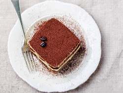
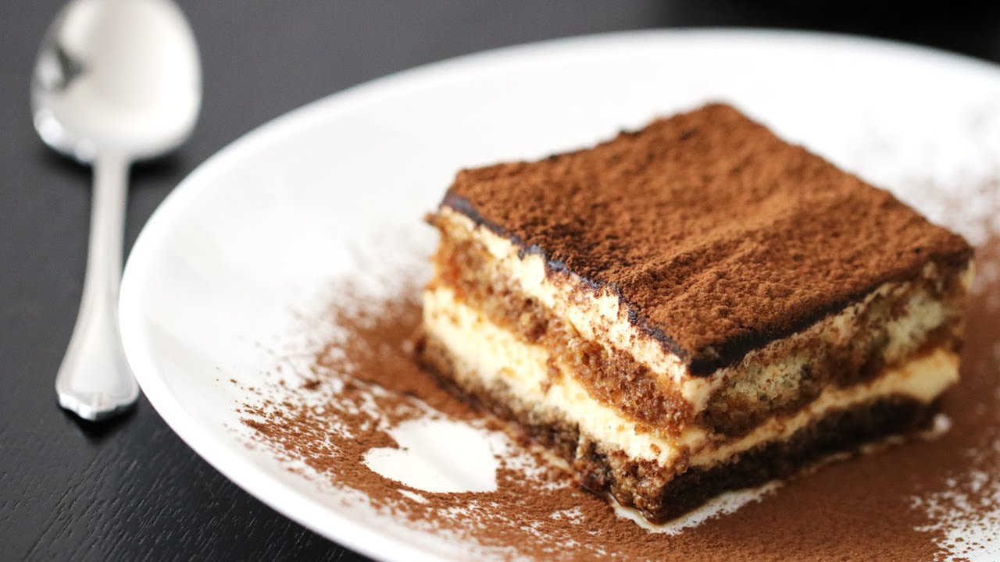

Einfacher Tiramisu-Kuchen mit einfachen Keksen
und Creme-Sabayon zum Nachtisch

Für 1 Portion:
- 75 g Keksen
- 37 1/2 ml Kaffee
- 1/2 Esslöffel Zucker
- 25 ml Marsala-Wein
für Creme-Sabayon:
- 20 g Eigelb
- 25 g Zucker
- 30 ml Marsala-Wein
- 100 g Mascarpone
- 43 3/4 ml Tiersahne
- 1/4 Esslöffel Kakao
Zubereitungsart:
Der Zucker wird im warmen Kaffee aufgelöst und abkühlen gelassen. Den Marsala-Wein hinzufügen und umrühren.
Eigelb und Zucker werden mit einem Mixer geschlagen und die Schüssel in ein Wasserbad gestellt. Den Marsala-Wein hinzufügen und die Sahne verrühren, bis sie eindickt. Die fertige Sahne wird vom Herd genommen und in eine größere, mit Eis gefüllte Schüssel gegeben. Rühren, bis es abgekühlt ist.
Den Mascarpone mit der abgekühlten Sahne schlagen und zum Schluss die geschlagene Tiersahne hinzufügen.
In Kaffee getränkte Kekse in passender Form anrichten. Wenn eine Reihe angeordnet ist, werden sie mit Sahne bestrichen. Dann gibt es wieder Kekse und Sahne. Das Dessert wird auf diese Weise bestellt, bis die Mengen aufgebraucht sind.
Den Abschluss bildet eine Schicht Sahne, die geglättet und mit Kakao bestreut wird. Das Tiramisu wird mit Klarsichtfolie abgedeckt und über Nacht im Kühlschrank stehengelassen.
Zubereitungszeit: 50 Minuten

Kalorien und Nährwert
Portion 364 g
Kalorien 1118 Kalorien
Kohlenhydrate 79 g 35%
Fette 77 g 62%
Proteine 12 g 5%
Cholesterin 473 mg
★
★
★
★
★
0 / 5